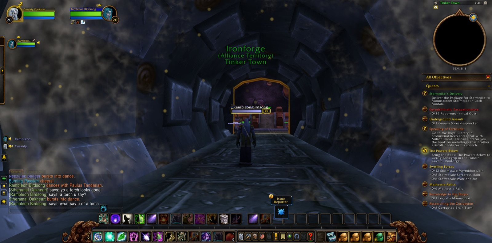
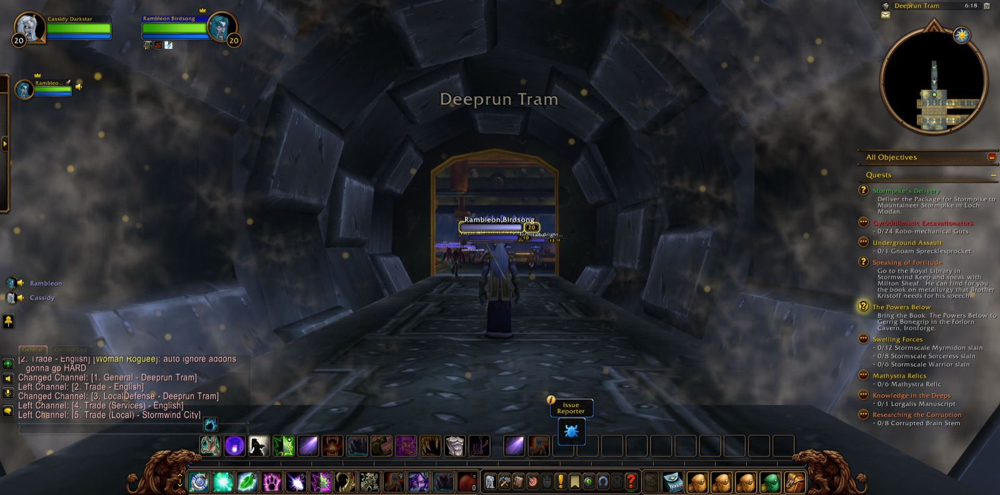

Cassidy Darkstar set out from Darnassus and passed into The Temple Gardens. There he joined Rambleon, a hunter, who went with him through the greater part of the night's road. From Rut'theran Village they crossed The Veiled Sea, and a picture was taken as Teldrassil fell behind and another as Darkshore rose up to meet them. They came by Mist's Edge to Auberdine, then went down The Long Wash and along Twilight Shore until they crossed into Ashenvale by The Zoram Strand. A picture marked that crossing too. They passed Lake Falathim and The Shrine of Aessina, came to Astranaar and Maestra's Post, and then turned north again into Darkshore, back to Auberdine and on into Twilight Vale.


In Twilight Vale the hunting began. Cassidy slew Grizzled Thistle Bears, a Giant Foreststrider and a Moonstalker Sire. When four Grizzled Scalps had been gathered, the errand called "Buzzbox 525" was done. Then he went on to Blackwood Den, where the Blackwood warriors, ursa and shamans fell before him. There other companions came and went. Andria, a hunter, walked with him for a good stretch, and Fanaandel, a druid, for a shorter one. Koiya, also a druid, joined and parted from him several times in quick succession, like one who has errands of her own. At the Den "A Lost Master" was seen through, and he took up the task of "Escape Through Force". Pictures were taken there and in the vale nearby.


From there he went to The Master's Glaive, where the Twilight Disciples and the Twilight Thugs were thrown down one after another. That was where Andria parted from him. There too he won the Peerless Eye that "It's All Fun and Games Until..." required. He took many pictures at the Glaive, as though the place were worth remembering. For a short while Artemisa, a hunter, travelled with him there. Then he came back by the Wildbend River and through the vale to Auberdine. There he came into his twentieth year of strength, and a picture was taken to mark it. In Auberdine he laid down both "Escape Through Force" and "It's All Fun and Games Until...". He also accepted "The Powers Below", a book to be carried to Gerrig Bonegrip in the Forlorn Cavern of Ironforge.


So the road turned east over the water. He crossed the sea to Rut'theran and back to Darkshore, then sailed from Auberdine to Stormwind Harbor. In Stormwind City he accepted "Speaking of Fortitude" and walked beside The Canals to the Dwarven District. There "Elmore's Task" was finished, and new errands were taken up: "Underground Assault", "Gyrodrillmatic Excavationators", and a package to be delivered to Mountaineer Stormpike in Loch Modan. Pictures were taken as he entered the Deeprun Tram and again as he came out into Tinker Town in Ironforge. There "An Old Colleague" was brought to its end. He took on more errands there: "Save Techbot's Brain!", "Find Bingles", "The Day After" and "Ineptitude + Chemicals = Fun". Then he walked the halls of the dwarves: the Military Ward, the Great Forge, the Hall of Explorers, and the Forlorn Cavern itself, then the Mystic Ward and at last The High Seat. There he took one more picture. His pack was full of promises, and the roads to Loch Modan and beyond lay open before him.

